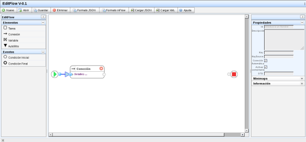
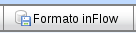
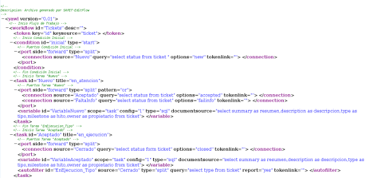

Ejemplo paso a paso
- Para comenzar a escribir un nuevo flujo de trabajo debemos seleccionar la opción del menú “Nuevo”, esto limpiará el área de diagrama y dejará solo los elementos necesarios para comenzar a realizar la construcción del flujo.

- Arrastramos desde el panel lateral izquierdo un elemento de tipo tarea y lo soltamos sobre el área de diagrama en una posición favorable para poderlo conectar con el evento inicial, luego enlazamos el elemento de conexión asociado al evento con el terminal de entrada de la tarea que acabamos de crear.

- Desplegamos los campos de todos los elementos que actualmente se encuentran en el área haciendo clic en “Detalles...” para poder editar el contenido de cada uno de ellos. Y agregamos la información mostrada en la imagen.

- Además es posible cambiar el color de los elementos del flujo, para esto usamos el ultimo campo de cualquiera de los elementos y seleccionamos el color que queremos darle. Se recomienda utilizar colores claros.

- Agregamos dos tareas mas para conectarlas con la tarea “Nuevo”, además como en esta tarea solo tenemos un elemento de conexión asociado necesitamos agregar otro y asociarlo para conectar ambas tareas nuevas al mismo terminal y debemos también seleccionar en el combobox que se encuentra al lado del terminal la opción “or” en este caso para que puedan crearse mas de un enlace.

- Ahora nuevamente haciendo clic en “Detalles...” podemos contraer los elementos para que ocupen menos espacio en el área de diagrama y además los ubicamos de una manera que pueda ser mas comprensible a la vista. Entonces en el flujo vemos que después de que un ticket es recibido (Nuevo), puede tomar dos estados “FaltaInfo” o “Aceptado”, después de pasar por “faltaInfo” debe pasar igualmente por el estado “Aceptado” y continuar en el flujo.

- A este nivel se hace necesario que guardemos la información que llevamos agregada en la aplicación para evitar perderla por algún inconveniente. Para esto solo debemos completar los campos Id, Key y KeySource de la sección de propiedades. Una vez hecho esto hacemos clic sobre la opción del menú “Guardar” y el flujo se habrá guardado usando como nombre el Id.


- Para cargar un flujo de trabajo simplemente debemos hacer clic en la opción “Abrir”, esto nos desplegará un listado con los nombres de los flujos que tenemos guardados. Podremos hacer clic en cualquiera de ellos para cargar el flujo correspondiente. Después de haber sido cargado este flujo puede ser modificado, guardado nuevamente e incluso puede ser eliminado utilizando la opción “Eliminar” del menú (Para poder eliminar un flujo debe ser primero cargado en la interfaz).


- Agregamos una nueva tarea para finalizar el flujo.

- Ahora agregamos un autofiltro, el autofiltro posee dos terminales. El terminal superior se debe enlazar con el terminal asociativo (superior) de la tarea con la que está relacionado y el terminal inferior (source) se debe enlazar con el terminal superior de la tarea “Source” del autofiltro. Después de esto guardamos nuevamente nuestro flujo.

- En este punto estamos listos para generar nuestro archivo XML que servirá como fuente de entrada al sistema inFlow para su análisis. Solo debemos hacer clic sobre la opción “Formato inFlow” del menú, si existe algún error en el flujo el sistema nos alertará y debemos arreglarlo para poder generarlo.

